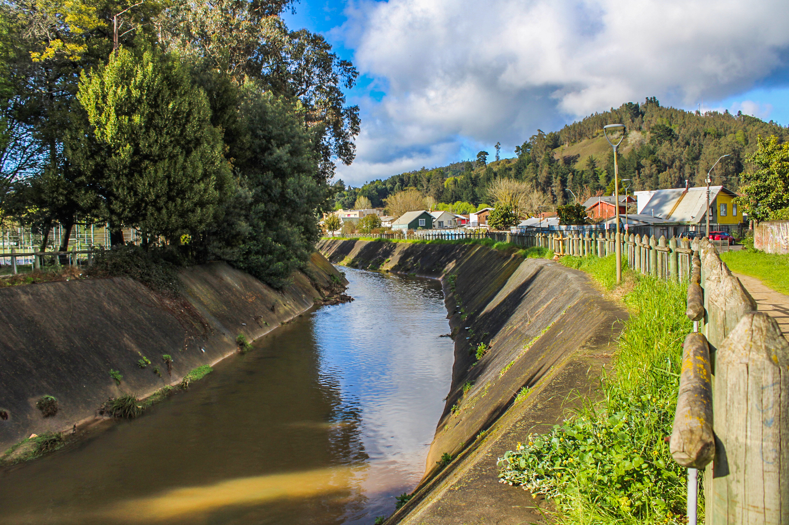
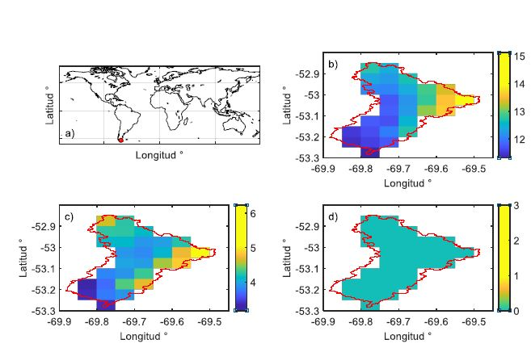
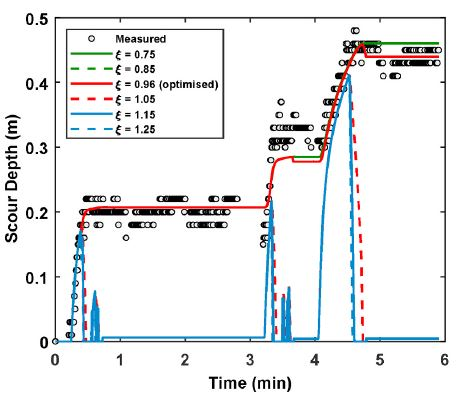
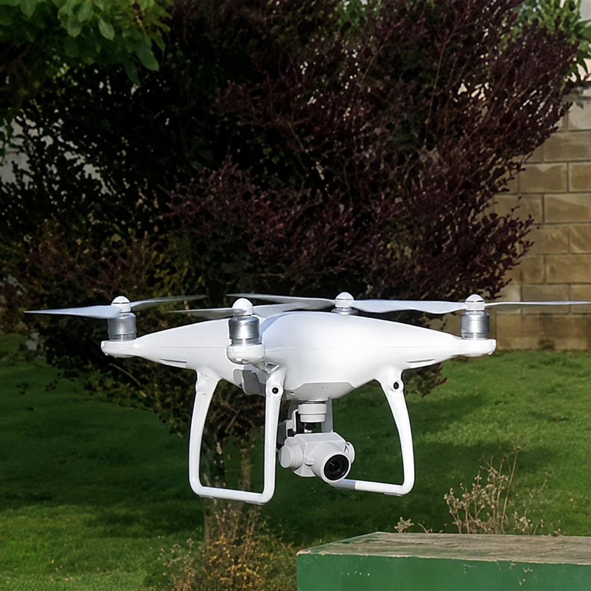
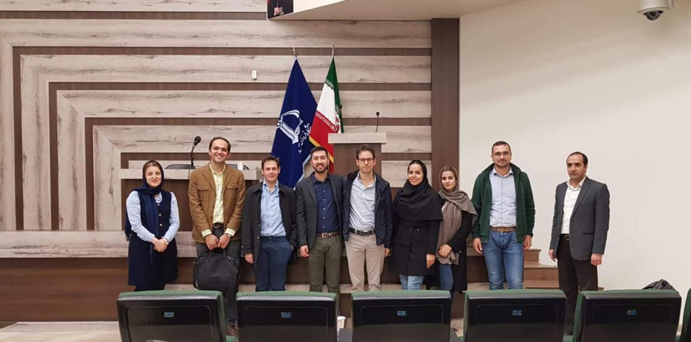
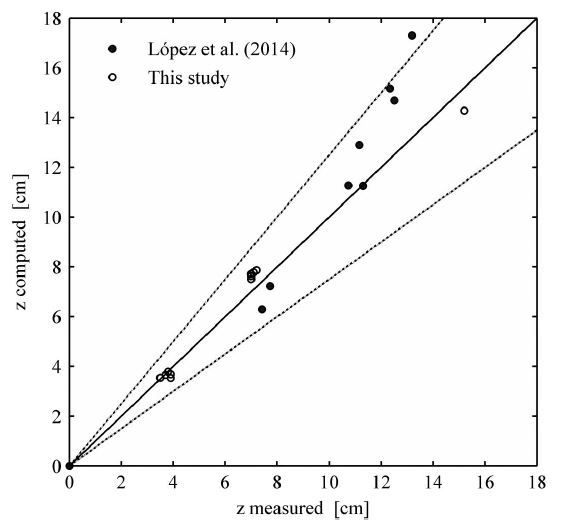

9
Total Projects
Funded and collaborative research
Funded and collaborative research projects in hydrology, hydraulic engineering and water resources.

Funded and collaborative research

Supported by grants and institutions

Ongoing research initiatives

Closed research projects

An integrated probabilistic framework to estimate the current and future risk of bridge damage caused by flood-induced scour in Chile.
 Funded by:ANID — FONDECYT Initiation in Research 2024 · Grant
11240171
Principal investigator:Alonso Pizarro, Universidad del Bío-Bío
Funded by:ANID — FONDECYT Initiation in Research 2024 · Grant
11240171
Principal investigator:Alonso Pizarro, Universidad del Bío-Bío
Browse current and completed work across hydrology, flood risk, infrastructure and modelling.
 March 2024 — March 2027In progress
March 2024 — March 2027In progress
Reference: FONDECYT Initiation Grant
11240171
Principal investigator: Alonso Pizarro —
Universidad del Bío-Bío, Chile
 Funded by: ANID — FONDECYT Initiation in
Research 2024, Engineering Group 1
Funded by: ANID — FONDECYT Initiation in
Research 2024, Engineering Group 1
Integrated assessment of flood loading, time-varying scour, soil–foundation–structure interaction and bridge damage states, with Águila Norte Bridge as the documented case study.

2023Completed
Reference: Factoría SEED 2023 (UDP)
Collaborators: Claudio Magrini —
Coordinator; Cristian Seguel Medina — additional author
reported by UDP
Funded by: Universidad Diego Portales —
Factoría SEED
Plataforma digital para gestionar información espacio-temporal y apoyar instrumentos de Manejo Integrado de Cuencas y su Evaluación Ambiental Estratégica.
 2022 — 2023Completed
2022 — 2023Completed
Reference: FSEQ210010
Collaborators: Felipe Aguilar Sandoval —
Coordinator; Cedric Little — Associate Researcher
Funded by: Agencia Nacional de
Investigación y Desarrollo (ANID) — Fondo de Investigación
Estratégica en Sequía 2021
Alerta temprana para la gestión de sequías en sistemas de aguas subterráneas-superficiales en Patagonia-Aysén.
 2022 — 2023Completed
2022 — 2023Completed
Reference: FOVI210055
Collaborators: Gerard Olivar Tost —
Coordinator according to the CV; Cedric Little —
Investigador Nacional Asociado
Funded by: Agencia Nacional de
Investigación y Desarrollo (ANID) — Fomento a la Vinculación
Internacional para Instituciones de Investigación de
Regiones
Monitoreo de ríos mediante análisis de imágenes, ultrasonido y láser en un contexto de cambio acelerado.

2022Completed
Reference: Proyecto inserción en la
investigación UDP — grant no. 1100327026
Collaborators: Prof. Alonso Pizarro —
Coordinator (Universidad Diego Portales, Chile)
Funded by: Universidad Diego Portales —
Proyecto de inserción en la investigación
Bridge erosion and scour modelling project led by Alonso Pizarro.

2018 — 2022Completed
Reference: COST Action CA16219
Collaborators: Prof. Salvatore Manfreda —
Coordinator; network of more than 200 researchers and
technicians from 36 countries
Funded by: COST — European Cooperation in
Science and Technology
International network for harmonising UAS practices in agricultural and natural-ecosystem monitoring.
 2015 — 2019Completed
2015 — 2019Completed
Reference: 552129-EM-1-2014-1-IT-ERA
MUNDUS-EMA21
Collaborators: Prof. Michelangelo Laterza
— Coordinator; Prof. J. L. Alvarez Carrascal — Joint
Coordinator; partnership of 20 universities
Funded by: European Commission — Erasmus
Mundus Action 2, Strand 1
Mobility, training and academic cooperation between Europe and Latin America in natural-risk mitigation and cultural-heritage protection.

2018Completed
Reference: Por confirmar
Collaborators: Prof. Salvatore Manfreda —
Coordinator; Alonso Pizarro — Visiting researcher; research
team from Italy and Iran
Funded by: CRUI — cooperation project
between Italy and Iran (2017)
Soil-moisture monitoring in semiarid environments using satellite data and the root-zone SMAR model.

2017 — 2018Completed
Reference: Fondecyt 1150997
Collaborators: Prof. Oscar Link —
Principal Investigator; Cristián Escauriaza —
Co-Investigator; Alonso Pizarro — technical/support
role
Funded by: CONICYT — FONDECYT
Regular
Research on bridge-pier scour under flood waves and unsteady hydraulic conditions.